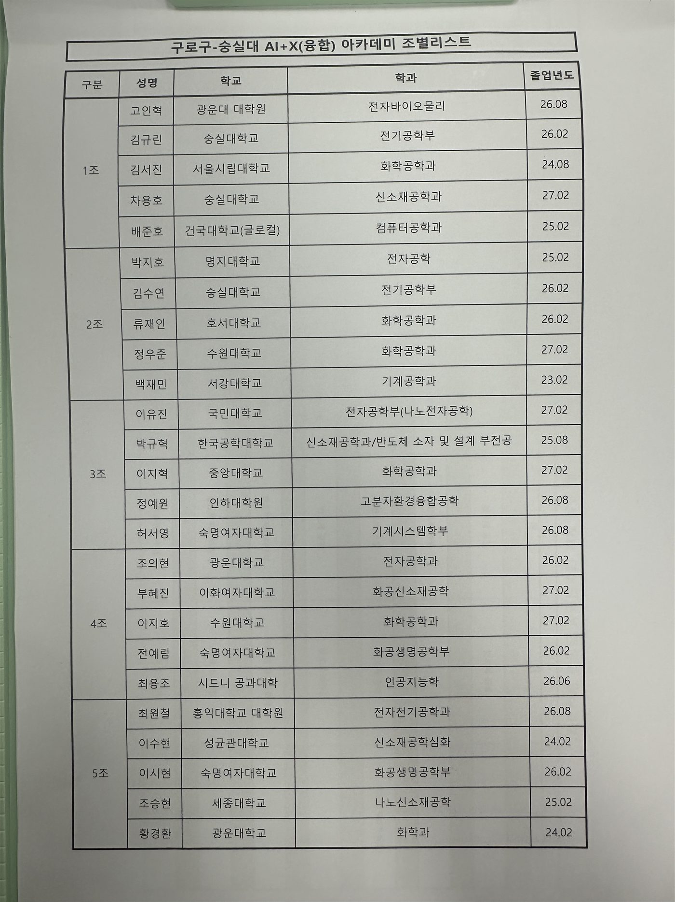
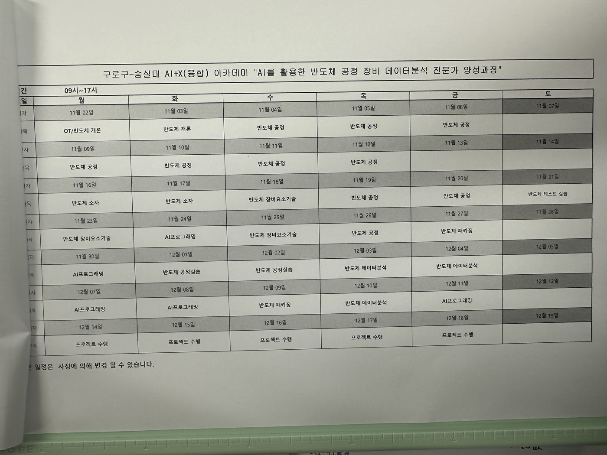
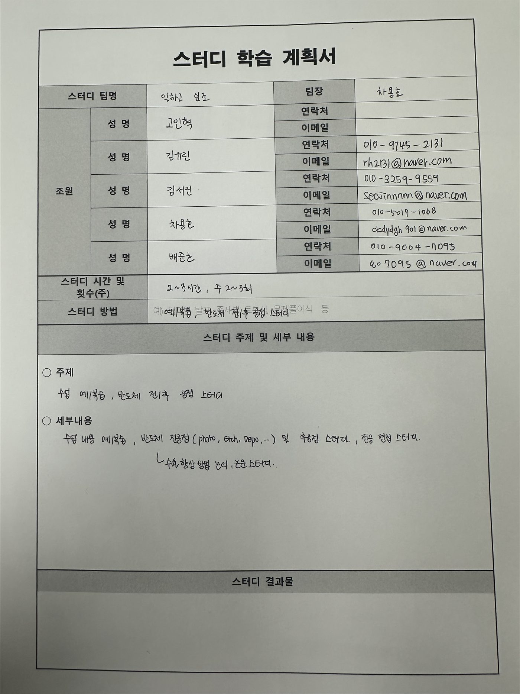

더인 교육 1일차
1. 격려사와 오리엔테이션
격려사: 숭실대학교 AI융합연구원 박광영 교수님
오리엔테이션
- 지각(10분까지)/조퇴/외출 3번 카운트 = 결석
- 출결 80% 이상
- 기업 면접/인적성은 미리 서류 제출하면 출결 인정
- 연속해서 5일 빠지면 중도탈락 (이런 경우가 있으면 미리 말씀드리기)
- 토요일에 수업 있는 날이 있음. 실습 같은 것들
- 중간에 면접 잡히면 여쭤봐도 좋음 쉬는 시간 적극 이용!
- Fab 실습 - 서울테크노 파트 서울과기대에서 진행할 예정
- 스터디 진행하는 경우 사용한 시간 작성하기 (21시까지 사용하는데 문제 없음) → 가장 마지막 사람은 소등하고 가기
- 기존 3개월 짜리 수업의 80~90%를 진행하다보니 배우는 양이 많을 예정
- 예상됐던 것처럼 사람 얻어가는게 반이상. 스터디 열심히 참여하기


2. 팀 스터디

<회의 내용>
- 반도체 공정 쪽을 전부 희망하고 가능하다면 후공정 쪽도 같이 공부
- 반도체 공부할 때 그냥 설명하듯이 공부하는 것을 목표로 하고, 전공 면접처럼 “Q. A에 대해서 설명해주세요” 라고 하면 본인의 말로 정리해서 설명해보는 연습
- 공정을 공부할 때 이론에만 그치지 말고 최신 논문이나 현재 어떤 어려움을 겪고 있는지 조사해보고, 양산 단에서 그걸 해결하려면 어떻게 해야할지 주제 잡고 토의해보는 시간도 가지면 좋을 것 같음
<해야할 일>
- 일정 관리 시스템 있으면 좋을 듯 (or 요일 투표)
- 각자 어떤 주제, 특정 공정 구체화를 계속 생각해보긴 해야함. 어짜피 공정에 대해서 배울 예정인데 예/복습만 같이 할거면 의미가 없다. 개인적인 이론 공부는 혼자 하는 것이고, 같이 할 수 있는 것을 해야함
→ 서로가 공부한 내용을 기반으로 특정 공정 설명하기. 해당 공정을 진행하는 장비에는 무엇이 있는지 설명하기. 해당 장비를 파는 회사는 어디인지 설명하기. 해당 공정을 진행하다가 문제가 생기면 어떻게 알아내는지. 계측은 어떤 장비로 진행하는지. 계측 회사는 어디인지 등등 확장되어가는 공부를 할 필요성이 있어 보임.
- 이 스터디 시간이 그냥 친목이거나, 서로 공부한 것을 어설프게 나누거나 하면 절대절대 의미없음. 이 시간을 통해서 얻어가는 것이 분명해야하고, 그건 혼자만의 아이디어로 될 일은 아님. 스터디를 진행하다보면 다른 팀은 이런식으로 진행하는구나, 우리도 참고해야겠다. 아니면 우리 팀의 팀원들도 아이디어를 들고 올 수 있는 것이고.
3. 수업 과제: 반도체의 역사에 대해
흐름: 가장 큰 흐름은 Transistor → VLSI(집적회로) → SoC(System on Chip)
- VLSI는 Very Large Scale Integration으로 집적화로 인해서 칩에 트렌지스터 개수가 많아진 상태를 의미
- 여러 기능을 한 곳에 모아둔 것이 SoC(System on Chip) 이다. 여러 칩으로 나눠서 사용할 때보다 신호 전달 지연과 전력 소모를 줄일 수 있다.
(1) 1946년에 진공관을 사용하는 에니악이 공개되었습니다.
- 진공관은 열전자를 활용해서 스위치처럼 사용했습니다.
(2) 1947년에 벨 연구소에서 트랜지스터가 최초로 발명되었습니다.
- 이때는 게르마늄을 사용했습니다. 이땐 아직 실리콘을 사용할 수 있는 기술력이 안됐습니다. (+그리고 실리콘 산화막의 품질이 >> 게르마늄 산화막의 품질)
(3) 1958년에 TI에서 최초의 집적 회로인 Intergrated curcuit이 발명되었습니다.
- 게르마늄위에 트렌지스터, 커패시터, 저항(여러 소자들)을 함께 올려뒀습니다.
(4) 1968년 Intel이 설립되었고, 이후 DRAM과 CPU를 개발했습니다.
- 초반 인텔은 기술의 선두주자였습니다. 그래서 다른 회사들은 기술이 나오면 따라하는 느낌.
(5) 1983년에 삼성전자가 도쿄선언으로부터 DRAM 사업을 시작합니다.
- 이병철 회장님의 공격적인 투자로 DRAM 사업에 진출하게 됩니다.
(6) 1987년에는 모리스 창(Texas instrument 출신)에 의해 TSMC가 설립됩니다.
- TSMC는 파운더리 업체로 고객사의 신뢰를 바탕으로 칩 위탁 생산을 진행
- 파운더리 회사의 등장으로 여러 펩리스 회사들이 나올 수 있게 되었음
(7) 일본의 시장 점유율은 특히 90년대부터 점점 쇠약해지고 있었습니다.
- 일본의 DRAM 사업은 미국의 다양한 억압과 견제로 인해 점점 쇠퇴해져갔습니다.
- 일본의 회사 세 곳이 뭉쳐서 엘피다를 설립했지만 마이크론에 인수되었습니다.
- 하지만 여전히 소재, 부품, 장비 쪽은 일본이 높은 점유율을 차지하고 있습니다.
(8) 현재 메모리는 삼,하,마 가 꽉 잡고 있습니다. 파운더리는 TSMC가 고객의 신뢰와 구축된 생태계를 바탕으로 압도적인 1위를 달리고 있습니다.
- 일본정부는 2019년에 포토레지스트, 불화수소, 불화폴리이미드 등과 같은 소재에 규제를 걸었던 적이 있는데, 이게 오히려 소재의 국산화(자립화)를 가능하게 해줬다.
4. 수업 복습 261102 (월)
1. 들어가며
- 벨류 체인 잘 이해하기 (반도체 산업 협회 들어가서 회사 탐색하기)
- 삼성전자는 기흥 → 화성 → 평택 순으로 세워졌음. Fab 하나 짓는데 거의 40조
- 강사님이 조언해주시기를 회사 탐색할 때는 규모, 연구인원, 매출액, 영업이익, 제품군, 고객사 등등을 직접 찾아보고 정리하면서 파악해보는 것도 좋다고 하셨다.
- 식각 공정에 대해서 배우면 이론에서 멈추지 말고 이 식각 장비를 파는 회사는 어디인지도 함께 입체적인 공부를 하기를 바란다고 조언
2. HBM
- 하이닉스는 AMD의 요청으로 HBM1을 처음 개발하게 되었다.
- 삼성전자는 하이닉스의 기술을 계속해서 따라가고 있다가 기술개발팀을 없애는 실수를 했다. 그런 이유는 앞으로도 계속해서 필요할지, 이 기술이 돈이 될지에 회의감을 가졌기 때문일 것이다.
→ 2019년에 해체했었다. 시장을 과소 평가 했거든
- 그러다가 생성형 AI의 등장으로 HBM이 대량으로 팔리기 시작했다.
→ 정보를 한 번에 많이 옮겨야 했지만 기존에는 직렬이라서 병목 현상이 있었음. 따라서 고대역폭을 갖는 HBM은 정보를 한 번에 많이 옮길 수 있게 해줬다.
3. 반도체 공정 미세화
- 결국 모든 반도체를 만들 때 결론은 수율이 잘 나와야하고, 생산성이 좋아야한다는 것이다. 그렇게 되어야지 생산단가도 낮아지게 되고, 제품의 가격이 낮아지면 그 회사 제품이 지배적이 되기 때문이다.
- 당연한 소리지만 미세화가 될 수록 웨이퍼에 존재하는 칩의 개수가 많아지는 것이니까 (일반 상식)
- 다시 미세화로 돌아와서, 미세화는 파장대가 중요하다. 파장대를 만드는 광원이 필요하다. 광원은 파장대를 만들어내야 하고 광도 또한 조건에 만족해야한다.
- 미세화가 특히 필요한 곳은 시스템 반도체이다. 시스템 반도체는 회로가 불규칙적이다. 그래서 EUV가 특히 필요하다.
- 시스템 반도체는 Spacer를 사용할 수 없어서 L-E-L-E…를 반복하는 수 밖에 없다. 그럼에도 Logic 반도체는 Multi-patterning이 어려운 편이라고 생각하면 된다.
4. 반도체의 기술 방향
- 결국 집적회로에서 집적도는 올라가고, 동작 속도는 빨라지고, 전력 소모량은 줄어들고, 다양한 기능이 탑재되고, 최종적으로 가격이 내려가야한다.
- 가격이 내려가기 위해서는 ‘수율’이 확보되어야 한다. 수율이 높아야 경쟁력을 확보할 수 있다. 수율이 낮은데 가격을 어떻게 내리겠는가?
- 3D NAND는 계속해서 단수가 높아져 Etch 능력이 중요해지고 있다. 그리고 한 번에 뚫기가 어려워서 Double Stacking을 일부 사용하게 된다.
- 미세 공정의 난이도가 확대되고 있다. 종횡비는 계속해서 커지고 있다.
5. 강사님의 갑분 조언
- 반도체 공정은 장비가 좋다고 될 일이 아니다. 오랜시간동안 문제가 생기면 해결하고 배워나가면서 노하우가 쌓여야한다. 어짜피 제품이 바뀌게 되면 소재,과정,장비 등이 달라지게 되기 때문에 새로운 문제가 생긴다.
- 이런 노하우들은 학교 이론을 공부하면서, 실험실 스케일에서 되는 것들이 아니라 현장에서 축적된 노하우를 계속해서 쌓아가는 것이다. 그렇기 때문에 TSMC는 계속해서 노하우를 쌓아왔고 그걸 따라 잡는게 어려운 것이다.
- 실제로 강사님도 삼성전자 반도체 연구소에 계실 때 문제가 생겼으면 일단 멈췄다고 하신다. 그리고 다음날에 선배님들이 오시면 수습하고 그랬다 한다. 상당히 현실적인 조언이지. 근데 누구라고 처음하는데 처음부터 잘하겠어. 다들 그런 시기가 있는 것이지.
→ 이런걸 면접 답변으로 사용해볼 수도 있겠다.
- 그럼에도 불구하고 실력이 늘 때는 이런 시간들이 늘어날 때이다. 혼자 하는 것이 두렵고 무섭고 당황스럽고 긴장되지만, 결국에는 이런 상황들을 자주 마주하면 할 수록 나의 것이 되는 것이다.
- 두렵다고 피하면 끝도 없다. 이런 상황을 계속해서 돌파하는 힘을 길러야 한다.
- 맨날 모든 상황을 메모할 수도 없고, 새로운 문제는 계속해서 생기게 된다.
- 강사님의 말씀을 듣고 삶의 여러 자리에서 회피하려던 내 자신을 반성하게 된다. 그게 교회 일이던, 동아리 일이던, 운동이던, 공부이던, 발표 자리이던, 학부연구생이던 상관없다. 실패 하기 싫어서, 순간 망신 당하기 싫어서, 남이 이상하게 생각하는게 두려워서 다양한 상황에서 회피해본 적이 있다. 하지만 그런 어렵고 마음 가운데에 하기 싫다는 마음이 드는 상황을 극복해 나가야 진정으로 내 실력이 되는 것이다.
- 결국에 엔지니어라는건 몇 년 동안 한다고 될 일이 아니라 여러 노하우들이 쌓여서 점차 내 실력을 키워서 실력 있는 엔지니어가 되는 것이다. 신입사원 1년? 교육 조금 받았다고 되는게 아니라 계속 배우고 실수하고 틀리고 혼나고 그러면서 성장해나가는 것이다.
6. FinFET
B.D: 관련해서 FinFET & GAA 공부
삼성 GAA는 이렇게 만들어진다: Gate All Around 공정의 모든 단계
- Planar MOSFET에서 발전된 형태로 생긴게 지느러미 같다고 Fin이다.
- Gate All Around 는 결국 손이 Gate처럼 되어 꽉 쥐면서 모든 면을 감싸서 전류를 제어한다는 아이디어이다.
- Fin의 너비가 5nm에 근접하게 되면서 GAA 구조를 사용하게 되었다. 이는 Gate를 더 이상 잘 제어할 수 없는 상황이기 때문이다.
7. Photo 공정 맛보기
- EUV는 복잡한 회로를 갖는 Logic 반도체에 많이 사용하게 된다.
- DRAM 자체는 규칙적인 구조를 갖기 때문에 Multi-patterning을 사용한다. DRAM 자체는 원가 싸움이기 때문에 EUV와 같은 복잡한 공정을 사용하기가 어렵다.
- EUV는 Photon의 에너지는 큰 대신 개수 자체가 적기 때문에 확률적인 결함이 생길 수 있다.
- 그리고 100nm 이하의 파장은 흡수되는 성질이 있기 때문에 반사 거울을 사용하게 되었다. (Mo-Si의 다층 구조)
8. 메모리 반도체 & 비메모리 반도체
- D램, S램, 플래시 메모리 등이 있다.
- 시스템 반도체, 광 반도체, 개별 소자 등이 있다.
- 메모리 반도체는 시장 점유율이 30% 정도이다. 소품종 대량생산이다. 구조가 복잡하진 않다. 타이밍이 중요하다. 리스크가 있다.
- 비메모리 반도체는 시장 점유율이 70% 정도이다. 다품종 소량생산이다. 구조가 복잡하다.
9. 비메모리 반도체
시스템 반도체
(1) 마이크로 컴포넌트
- CPU, GPU 같은 것들, MCU
(2) 아날로그 반도체
- 센서칩, PMIC
(3) 로직 반도체
- AP 칩 같은 것들
(4) 주문형 반도체
- ASIC, ASSP 같은 것들
- FPGA와 같은 경우는 칩으로 만들어지고 나서도 프로그래밍을 통해 기능 조정이 가능하다.
광반도체
- LED, Image Sensor 같은 것들
- CIS(CMOS Image sensor)와 CCD(Charge Coupled Device)로 구분된다.
개별 소자
- 수동소자: 저항기나 콘덴서처럼 입력된 신호 그대로 처리
- 능동소자: 신호의 기본적인 특성이 변화되도록 함 ex) 트랜지스터
10. Wafer에 대해서
(1) 수율
- “Wafer의 수율 x Die의 수율 x 패키징시의 수율” 이 모두 곱해져야 전체 수율이 된다. (일반적인 얘기)
- Throughput을 통해서 처리량이 증가하는 것이 목표이다.
- 1 Lot은 25매가 같이 움직인다.
- 한 개의 Wafer 내에서도 균일도가 중요하다. 그렇지만 Wafer 중앙부와 가장자리는 균일도가 같지 않은데, 그 이유는? Wafer Center 쪽에서는 주변 상황이 동일하지만 edge 쪽은 wafer가 있거나 없거나 이기 때문에 상황이 다르다.
(2) 엔지니어
- 엔지니어는 이럴 때 원인을 찾고 해결하는 것 뿐만 아니라 공정을 최적화 시킬 수도 있어야한다. 문제가 발생할 때만 해결하는 것이 아니라 공정이 진행될 때 최적화를 계속 고민하고 실제로 최적화를 시킬 수 있어야한다.
- 한 step에서 몇 초 줄인다고 생각할 수 있지만 수만장의 Wafer들의 시간이 줄여지는 것이기 때문에 그 영향은 매우 크다.
(3) Flat zone, Notch, TEG(Test Element Group)
- 별건 아니고 200mm까지는 Flat zone을 사용했었는데 또 웨이퍼의 가장자리도 최대한 살릴려고 하다보니 요즘 300mm에서는 Notch 를 통해서 표시해둔다고 한다.
- TEG(Test Element Group)는 품질 관리를 위함임
PPT 기준 97pg까지 진도 나갔음
5. 수업 예습: Particle이 미치는 영향은?
Q. Particle이 미치는 영향은?
<내 생각>
1. 일단 Particle이 무엇인지부터 정의를 해야할 것 같은데?
- 먼지, 사람, 부품, 공정 중에 떨어져 나오는 조각, Gas로부터 발생한 부산물의 “독립된 입자”를 의미
2. Particle이 붙게 되는 원리는 어떻게 되지?
- 반데르발스 인력, 정전기력, 화학적인 상호작용 등등
3. Particle이 어떤 공정 중에 문제를 발생하게 되지?
- 먼저 공정별로 나누어서 생각해볼 필요가 있을 것 같다.
(1) Photo 공정
- PR coating이 혜성형 무늬를 남기면서 제대로 coating이 안될 수 있다. → 패턴이 제대로 형성이 안됨 → 패턴이 잘못 찍혀서 회로도(?)에 문제가 생기면 Short나 open이 일어날 수 있다.
- 레티클에 실질적으로 Particle이 붙을 수 있을지는 모르겠지만, 붙게 된다면 그 입자가 빛을 방해하게 되고 원하지 않는 패턴이 print 될 것이다. 아마 펠리클에 의해 보호되더라도 초점이 흐려지게 되는 문제로 이어질 수 있다.
(2) Etch 공정
- Etch를 통해서는 식각을 진행할 때 Mask에서 떨어진 물질이 Etch 되어야 할 곳을 mask가 방해하게 되어버린다.
- Etch를 진행하고 나면 다양한 반응물과 부산물이 생길 것이다. Cleaning을 통해서 지우려고 하겠지만, 덜 지워지거나 남는 것들이 생길 수 있을 것이다.
- Etch에서도 식각이 진행할 때 유기물들이 생길 수 있고, 그 유기물은 후속 공정에 영향을 줄 수 있다.
- Particle이 남아있다면 전기적인 특성에 변화를 줄 것이다. (저항값이랄지..) 근데 그걸 공정 중에 파악할 수 있다면 좋은데 파악이 안된다면 문제를 안고 가는 것이겠지?
- 다음 step들을 거치면서 해당 문제가 누적이 되거나 뒤늦게 발견되면 open이나 short가 일어날 수 있다. 즉 접촉 불량이나 전류 누설이 생길 수 있을 것이다.
(3) Deposition 공정
- Particle이 존재하는 상태에서 증착이 되면 핀홀이나 보이드가 생기게 될 수 있습니다.
- Particle이 존재하는 상태에서 증착이 되면 그 부분이 떠버릴 것이다. 그러면 open이 될 수도 있을 것 같다.
- 이미 Particle에 의해 떠버린 상태에서 다음 공정을 계속 진행하다보면, Photo 공정에서 원하는 패턴 모양을 얻지 못해서 miss aligned 되고 이런 오차가 누적되면 곧 불량으로 이어질 것이다.
- 원하는 반응이 일어나야하는데 예상하지 못하는 반응이나, 반응에 방해가 될 수도 있을 듯함
(4) 금속 배선 공정
- Al 공정이나, W 이나, Cu나 각각의 공정을 하면서 particle이 생기거나 잔류하는 상황이 생길 수 있을 것 같다.
- 다만 금속 배선 공정에서는 아무래도 short나 open에 직접적으로 이어지기가 더 쉬울 것 같다. (사실 깊이 생각하고 싶은데, 아는게 없다.)
- CMP 공정을 진행하고 나서도 문제가 생길 수 있지 않을까 싶기도 하고? 결국 뭐 금속 배선에 손상이 가해지겠지.
(5) CMP 공정
- 잔류하는 particle이 스크래치를 내고 회로가 끊기게 될 수 있다.
4. 특정 공정을 떠나서 공통적으로 어떤 문제가 생기고 그 문제는 어떤 결과로 이어지지?
- Photo, Etch, Depo 공정을 진행하면서 Particle에 의해서 생길 수 있는 문제는 open(만나야 할 곳이 만나지 못하고 끊겨 있어 전류가 흐르지 못하는 것), short(만나지 않아야 할 곳이 만나서 전류가 과도하게 흐르는 것) 이 생길 수 있다. 그리고 목표한 패턴 CD나 식각 프로파일을 갖지 않을 수 있다. 증착에서는 두께 편차로 이어질 수 있다.
- 결국 이 모든 결함은 저항, 전류의 제어 문제로 이어지게 되고 칩에서 전기적 제어에 이상이 생기는 것은 곧 불량이거나 성능을 100% 낼 수 없는 칩이다.
(1) 기능 불량 관점
open이나 short가 존재한다면 신호가 전달이 안되면 의도한 동작을 수행할 수가 없다.
(2) 성능 저하 관점
기능을 할 수는 있지만 전류가 누설되거나 저항이 증가하면 속도가 느려지거나 낼 수 있는 파워를 내지 못할 것이다.
5. 그러면 제어 가능한 Particle을 어떻게 제어해야할까?
- 예방이 가능한 영역이면 예방을 할 것 같다. 그런데 예방을 할 수 없는 particle이 존재할 것이다. 그런 경우에는 검출을 통해서 문제가 발생한 상황이나, 조짐을 파악한다. 이미 생긴 것이 발견되었다면 공정을 되돌릴 수 있는 Photo 공정에서는 되돌릴 수도 있을 것 같다. 다른 공정이라면 보정을 할지, 아니면 성능이 떨어지는 칩으로 분류하고 계속해서 진행할지는 잘 모르겠다. 그리고 최종적으로 피드백을 통해서 이런 문제가 생기지 않도록, 혹은 생겼다면 어떻게 대처해야 할 지를 잘 기록해서 노하우로 만들어서 대응해야 하지 않을까?
6. 수업 질문
1. EUV를 사용하면 결국 확률적인 결함 문제에 부딪히는데, 이건 어떻게 해결하고 있는지? 공정에서 꼼수를 써서 해결할 수 있는지? (ArFi는 OPC, Phase shift mask 등등 을 사용하는데)
- EUV에서는 확률적인 결함을 줄이기 위해서 Photon 수 자체를 늘리려고 한다. 그래서 Dose량을 늘리고 노광 시간을 늘려서 입사하는 Photon 수 자체를 늘리려고 한다.
- 아니면 적은 빛에 잘 반응할 수 있도록 PAG 자체를 늘려도 되지만, 그만큼 용액 안에 다른 요소들이 줄어들게 된다. 그렇게 다른 요소들이 줄어들게 되면 다음 공정인 Etch 공정을 진행할 때 잘 버틸 수 있는지 또한 고려사항이다.
→ 항상 엔지니어링은 Trade-off 관계이기 때문에 PAG 자체를 늘리는 것과, PAG 늘렸을 때 다른 요소가 줄어서 Etch를 할 때 영향을 줄 수 있다는 이 생각을 할 수 있으면 좋다. 그래서 이번에 강사님을 통해서 배워갈 수 있어서 좋은 것 같다.
2. Photo 공정을 진행하면서 Miss Align으로 점점 틀어질 때 중간에 알아차릴 수는 있는지 알아차리면 어떻게 되는지? (Align key)
- 이건 질문 못했어.
3. 무기물 포토 레지스트가 양산 단에서 사용하고 있는지, 사용하면 어디에 사용하고 있는지 궁금합니다.
- 실제로 유기물 레지스트, EUV용 레지스트에 한계를 느껴서 무기물 레지스트를 사용하려고 하고 있다. 실제로 양산에서 필요한 곳들에 사용되고 있다. 무기물은 입자 크기나 반응성 이런게 좋다고 말씀하셨던 것 같아. 그래서 그런 장점들이 있어서 사용하려고 하지만 역시나 비싸다.
4. Photo 공정을 진행할 때 Bake를 진행할 때 PEB를 진행할 때 산의 확산이 일어나는데, 이 때 온도 조절을 할 때 고려해야하는 사항에서 산의 확산 거리 같은 것도 같이 고려하는지
- 이것도 따로 질문 못했다.
실제로 PR 공정을 할 때 겪게 되는 이슈를 배워올 수 있었는데!
- CAR type의 PR은 Cleaning하고 DI water로 헹구고 건조할 때 문제가 생긴다. 이런건 이론에서 안배우는거라 이런게 귀한거지
- 그러니까 이게 건조가 될 때 물을 건조시켜야 하니까 그 과정에서 표면장력(?)에 의해서 무너지기도 한다. 생각보다 현실적인 문제지. 그래서 결국 PR Collapse가 실제로 이러날 수 있는 문제였다는게 신기하고, 그런데 조금만 생각해보면 당연하다.